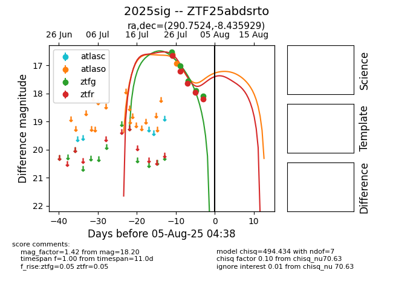

Target 2025sig at 2025-08-05 04:38, see:
FINK: fink-portal.org/2025sig
Lasair: lasair-ztf.lsst.ac.uk/objects/2025sig
ALeRCE: alerce.online/object/2025sig
TNS: wis-tns.org/object/2025sig
YSE: ziggy.ucolick.org/yse/transient_detail/2025sig
alt names
ZTF25abdsrto (ztf,fink)
2025sig (tns,yse)
coordinates:
equatorial (ra, dec) = (290.7524,-8.43593)
galactic (l, b) = (28.9255,-10.82364)
photometry
last atlaso=16.92, ztfg=18.09, ztfr=18.20
2 atlaso, 5 ztfg, 5 ztfr detections
